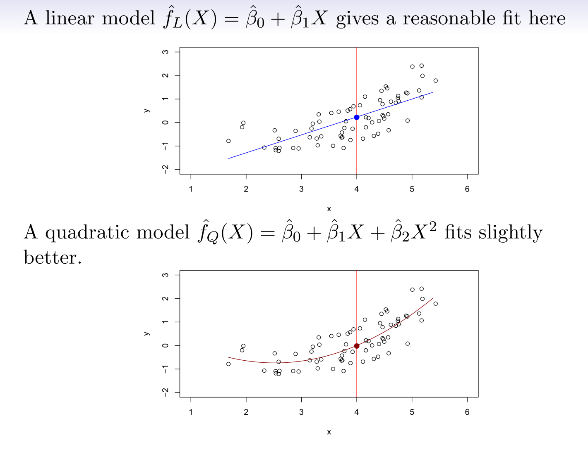
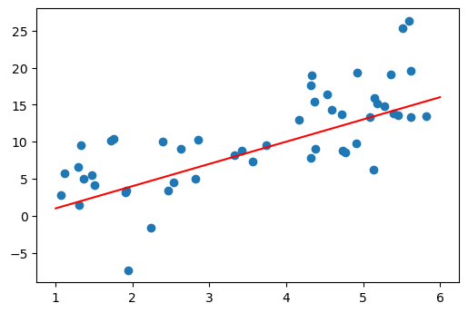
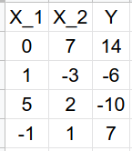
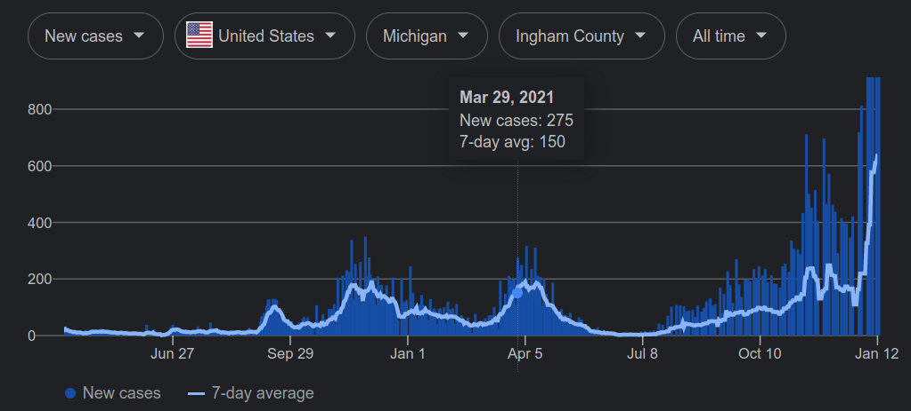
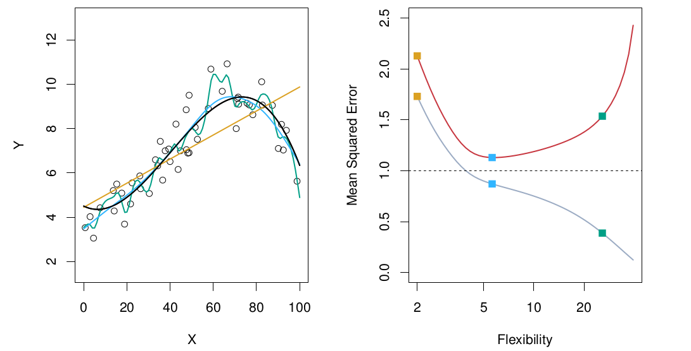
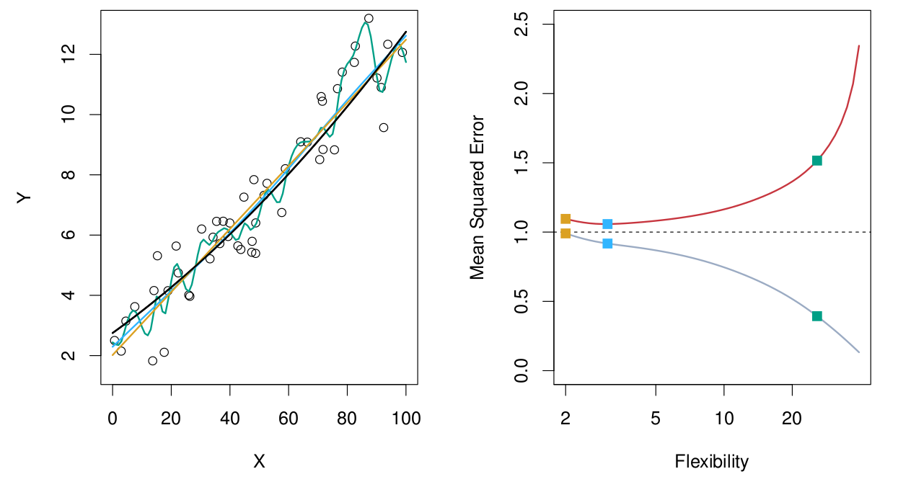
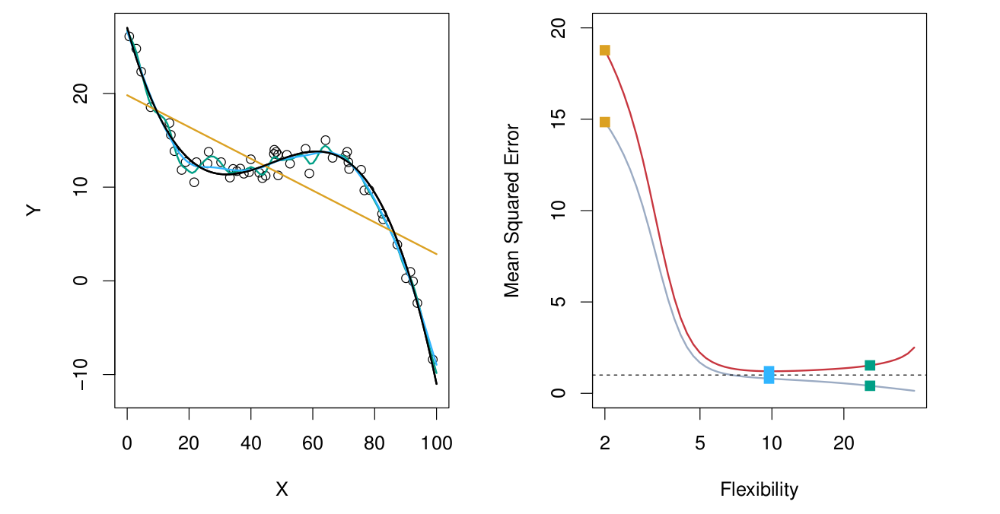
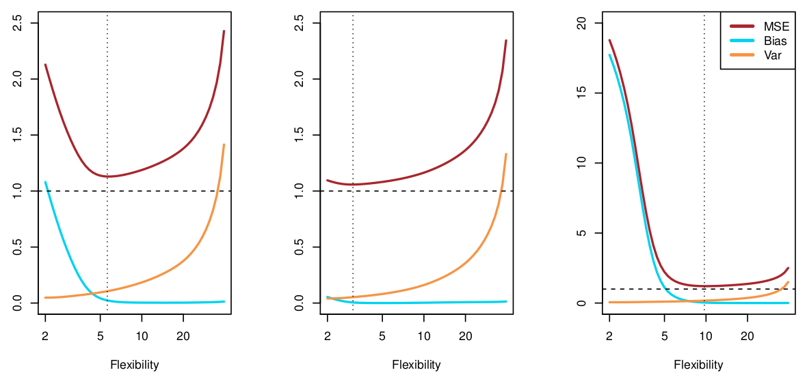

toc
Last time:
Section 1


Given the following data, you decide to use the model
What is the MSE?


The observations {(x1,y1),⋯,(xn,yn)} used to get the estimate f ^
Test set:
The observations {(x1′,y1′),⋯,(xn′′,y𝑛′′)} used to compute the average squared prediction error



Section 2
Bias: the error that is introduced by approximating a (complicated) real-life problem by a much simpler model.
